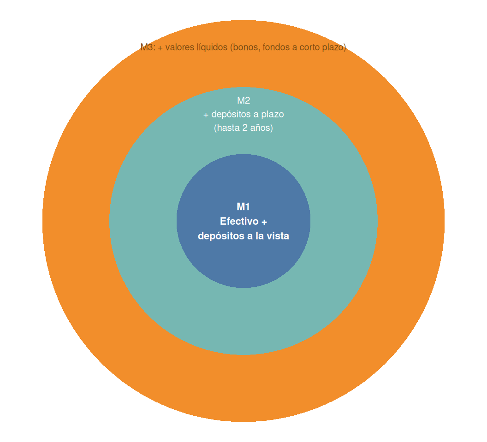

10 El dinero, el sistema financiero y las finanzas personales
10.1 El dinero
El dinero es una de las invenciones más importantes de la humanidad. No se reduce a monedas y billetes: es una herramienta basada en la confianza que facilita el funcionamiento de la economía, resolviendo los problemas que planteaba el trueque.
10.1.1 El origen del dinero: los problemas del trueque
Antes de que existiera el dinero, el intercambio de bienes y servicios se realizaba mediante el trueque. Este sistema presentaba dos dificultades que limitaban seriamente el desarrollo económico.
AdvertenciaLas dos dificultades del trueque
- Coincidencia de necesidades: para que el trueque funcione, ambas partes deben desear exactamente lo que la otra ofrece. Si el lechero no quiere pan, el intercambio no es posible.
- Valoración de los bienes: comparar el valor de productos distintos es complicado (¿cuántas barras de pan equivalen a un litro de leche?). Además, algunos bienes no se pueden dividir con facilidad, como una vivienda o un animal vivo.
El dinero surge como solución a estos problemas. Su función principal es facilitar los intercambios, y su valor se sostiene en la confianza: quien acepta dinero sabe que podrá utilizarlo después para adquirir lo que necesite. Por ello se dice que el dinero es el «aceite» que permite que funcione el motor de la economía.
TipEjemplo: el dinero en las prisiones
En entornos sin acceso al dinero convencional, como las cárceles, los reclusos han utilizado objetos como cigarrillos para realizar transacciones. No son dinero en sentido estricto, pero funcionan como tal porque todos confían en que pueden intercambiarse por otros bienes o servicios.
Elementos como las acciones de una empresa o una vivienda forman parte de la riqueza de una persona, pero no se consideran dinero: no son aceptados de forma inmediata y universal como medio de pago. A esa cualidad de ser fácilmente convertible en medio de pago se la llama liquidez.
10.1.2 La historia del dinero
A lo largo de la historia, el dinero ha adoptado formas distintas antes de llegar a su configuración actual.
El dinero mercancía se basa en bienes con valor intrínseco, que pueden utilizarse tanto para el intercambio como para satisfacer necesidades directamente. Históricamente se han empleado la sal (de donde procede la palabra «salario»), las especias y el ganado. Para que un bien pueda funcionar como dinero mercancía debe cumplir cinco condiciones.
NotaCaracterísticas del dinero mercancía
- Durabilidad: debe conservarse en el tiempo sin deteriorarse.
- Transportabilidad: debe tener un valor elevado en relación con su peso y tamaño.
- Divisibilidad: debe poder fraccionarse sin perder valor.
- Homogeneidad: todas las unidades deben ser idénticas entre sí.
- Oferta limitada: su disponibilidad debe ser escasa para mantener su valor.
Por estas razones, los metales preciosos —oro y plata— fueron el dinero mercancía más utilizado, aunque presentaban inconvenientes: diferencias de calidad al pesarlos, riesgo de robo durante el transporte y un coste de oportunidad elevado, ya que el metal empleado como moneda no podía destinarse a otros usos.
El dinero papel surgió para resolver estos inconvenientes. Su origen se remonta a la Edad Media, cuando los orfebres ofrecían cajas de seguridad para custodiar metales preciosos a cambio de una comisión, entregando a cambio un recibo en papel canjeable por el metal depositado. Con el tiempo, la gente empezó a pagar directamente con esos recibos, dando lugar al dinero respaldado por reservas metálicas, conocido como el patrón oro.
El dinero fiduciario, el que se utiliza en la actualidad, no tiene valor intrínseco ni está respaldado por reservas físicas de metal. Su valor procede únicamente de la confianza colectiva en que será aceptado como medio de pago. Los bancos centrales —como el Banco Central Europeo— son los encargados de emitirlo y regularlo, garantizando su autenticidad y la estabilidad económica.
El dinero electrónico, aunque no es dinero en sentido estricto, está directamente vinculado al dinero legal y al dinero bancario. Permite realizar pagos a través de dispositivos electrónicos: tarjetas, teléfonos móviles u ordenadores.
Las criptomonedas son una forma de dinero digital descentralizado. La más conocida es el bitcóin, creado en 2009 bajo el seudónimo de Satoshi Nakamoto.
NotaCómo funcionan las criptomonedas
Su emisión se basa en la minería: ordenadores que resuelven problemas matemáticos complejos para validar transacciones y generar nuevas unidades. Las transacciones se registran mediante la tecnología blockchain (cadena de bloques), que garantiza su seguridad sin necesidad de intermediarios. A diferencia del dinero fiduciario, el bitcóin no lo emite ni regula ningún banco central: su precio depende exclusivamente de la oferta y la demanda en los mercados.
Entre las razones de su popularidad están la descentralización —ninguna entidad puede congelar cuentas o emitir moneda a voluntad— y la posibilidad de realizar transacciones globales sin intermediarios, aunque no son anónimas sino pseudónimas, pues quedan registradas en el blockchain.
AdvertenciaLimitaciones de las criptomonedas como medio de pago
Para que un activo funcione como dinero real debe ser generalmente aceptado, y las criptomonedas presentan dos problemas en este sentido: una volatilidad muy alta, con variaciones de valor drásticas en cuestión de horas, y una falta de regulación que no ofrece las mismas garantías legales que las entidades financieras tradicionales.
10.1.3 El tipo de interés: el precio del dinero
El tipo de interés es, en esencia, el precio del dinero. Pedir dinero prestado tiene un coste: al solicitar un préstamo, el prestamista establece un plazo de devolución y un interés como compensación, expresado habitualmente como porcentaje anual.
TipEjemplo: el peligro de la periodicidad
Un préstamo de 10 000 € al 5 % anual genera 500 € de intereses cada año. Si ese mismo 5 % se aplicara de forma mensual, se pagarían 500 € al mes, es decir, 6000 € al año solo en intereses. Un mismo porcentaje puede representar cantidades muy distintas según su periodicidad.
Conviene distinguir dos indicadores:
- El TIN (tipo de interés nominal) es el porcentaje que el banco aplica sobre el capital prestado o invertido. No incluye comisiones ni tiene en cuenta la frecuencia de los pagos.
- La TAE (tasa anual equivalente) refleja el coste o rendimiento real anual, ya que incorpora la periodicidad de los pagos y las comisiones obligatorias. Es el indicador más útil para comparar ofertas bancarias distintas.
¿Por qué se cobran intereses? Existen tres razones fundamentales: la renuncia al dinero (coste de oportunidad de no poder disponer de él mientras dure el préstamo), el riesgo de impago (una parte de los prestatarios no devolverá el dinero, y el interés compensa esa pérdida esperada) y la inflación (el dinero pierde valor con el tiempo, por lo que el interés compensa esa pérdida de poder adquisitivo).
¿Quién decide el tipo de interés? Participan tres agentes. El Banco Central Europeo fija el tipo de interés de referencia de la eurozona, el precio al que los bancos comerciales obtienen financiación: si el BCE sube ese tipo, los bancos prestan más caro; si lo baja, prestan más barato. Los bancos comerciales obtienen fondos del BCE o de los depósitos de sus clientes y prestan ese dinero a un interés superior, obteniendo así su margen. El mercado financiero interviene cuando un Estado o una gran empresa emite deuda: si los inversores confían en que se les devolverá, exigen un interés bajo; si desconfían, exigen uno más alto.
Los bancos comerciales fijan sus tipos finales considerando cuatro factores: el tipo de referencia del BCE (que actúa como suelo), la competencia entre entidades, el riesgo del prestatario y el plazo del préstamo.
El precio del dinero no es igual para todos los clientes: varía según el plazo (a mayor plazo, mayor incertidumbre y mayor interés) y según el riesgo del cliente (un buen historial financiero permite acceder a intereses más bajos).
TipEjemplo: la prima de riesgo de España
En 2012, España atravesaba una crisis económica grave y los inversores exigían un interés cercano al 7,5 % por comprar su deuda a diez años. En 2024, con una economía más estable, ese interés rondaba el 3 %. A esta diferencia entre el interés exigido a un país con dificultades y el exigido a un país considerado seguro —como Alemania— se la llama prima de riesgo.
10.1.4 La demanda de dinero
El dinero cumple tres funciones que justifican por qué se utiliza:
- Medio de cambio: evita el trueque y facilita el comercio.
- Depósito de valor: permite guardar riqueza para el futuro sin que se deteriore, a diferencia de otros bienes perecederos.
- Unidad de cuenta: facilita medir y comparar el valor de bienes y servicios distintos.
Mantener dinero inactivo tiene un coste, aunque no sea evidente: el coste de oportunidad de no haberlo invertido en activos reales (viviendas, terrenos) o financieros (bonos, acciones, depósitos) que generarían rentabilidad. Por ejemplo, 10 000 € parados en una cuenta corriente, con un tipo de interés medio del 4 % en inversiones seguras, suponen renunciar a 400 € anuales.
La demanda de dinero es la cantidad de riqueza que las personas y empresas prefieren mantener líquida, en lugar de invertida. Depende de tres factores: la renta (a mayor renta, mayor necesidad de liquidez para los gastos diarios), el tipo de interés (con tipos bajos se prefiere mantener más efectivo, porque invertirlo apenas compensa; con tipos altos se prefiere invertir) y la incertidumbre (en momentos de crisis se prefiere mantener el dinero líquido por precaución).
10.1.5 La oferta monetaria
La oferta monetaria es la cantidad total de dinero que circula en una economía en un momento dado: la suma del efectivo en manos del público y los depósitos bancarios.
Según su grado de liquidez, el dinero se clasifica en tres agregados monetarios, cada uno más amplio que el anterior.
Como muestra la Figura 10.1, cada agregado contiene al anterior, como muñecas rusas: M1 (el más líquido) incluye el efectivo en circulación y los depósitos a la vista; M2 añade los depósitos a plazo de hasta dos años y los depósitos con preaviso de hasta tres meses; M3 añade, además, valores líquidos como bonos del Estado o fondos de inversión de renta fija a corto plazo. Actualmente, M3 es el indicador más utilizado por el Banco Central Europeo para medir la cantidad real de dinero en circulación, porque ofrece la visión más completa.
Un cambio de forma del dinero no siempre altera estos agregados. Por ejemplo, ingresar 50 € en efectivo en un depósito a plazo reduce M1 (baja el efectivo) pero mantiene M2 igual (el dinero sigue dentro de ese agregado, solo cambia de forma). Sacar 20 € de un cajero no altera ni M1 ni M2, porque el dinero solo cambia de depósito a la vista a efectivo, dentro del mismo agregado.
10.1.6 El proceso de creación de dinero
Los bancos comerciales no se limitan a custodiar el dinero: lo multiplican mediante el sistema de reserva fraccionaria. Cuando un banco recibe un depósito, debe mantener una parte en reservas —el coeficiente de caja, fijado por el BCE— y puede prestar el resto. Ese préstamo, al gastarse, se convierte en un nuevo depósito en otro banco, que repite el proceso. Así surge el dinero bancario.
TipEjemplo paso a paso, con un coeficiente de caja del 20 %
- Una persona deposita 1000 € en el banco A. El banco retiene 200 € en reservas y presta 800 €.
- El banco A presta esos 800 € a un cliente para comprar una moto. La persona que depositó sigue viendo 1000 € en su cuenta, y el prestatario dispone de 800 € reales: con 1000 € físicos existen ya 1800 € de poder de compra.
- El vendedor de la moto ingresa esos 800 € en el banco B.
- El banco B retiene el 20 % (160 €) y presta el resto (640 €) a un nuevo cliente, y el ciclo continúa multiplicando el dinero disponible en la economía.
La cantidad máxima de dinero que puede crearse a partir de un depósito inicial depende del multiplicador bancario:
\[\text{Multiplicador bancario} = \frac{1}{\text{Coeficiente de caja}}\]
Con un coeficiente de caja del 20 % (0,2), el multiplicador es \(1 / 0{,}2 = 5\). El dinero total creado se obtiene multiplicando el depósito inicial por el multiplicador: \(1000 \,€ \times 5 = 5000\,€\).
Este proceso depende de tres agentes: el Banco Central, que controla la base monetaria y decide el coeficiente de caja; el sistema bancario, cuya capacidad de crear dinero es mayor cuanto menor sea el coeficiente de caja y mayor su disposición a prestar; y el comportamiento de las personas, ya que si el público prefiere guardar el dinero en efectivo en lugar de depositarlo, el proceso de creación se frena.
ImportanteEl cierre del grifo del crédito
Durante una crisis económica severa puede producirse un fenómeno llamado credit crunch: los bancos, desconfiando de la solvencia de familias y empresas, dejan de prestar dinero. Esto paraliza la creación de dinero bancario, dificulta el acceso a la financiación y provoca una caída del consumo, el cierre de empresas y un aumento del desempleo. El sistema bancario no es solo un lugar donde guardar billetes: es una pieza clave para el funcionamiento de la economía.
10.2 El sistema financiero
NotaDefinición
El sistema financiero es el conjunto de instituciones, mercados e instrumentos que permiten canalizar el ahorro hacia la inversión, facilitando el flujo de recursos entre quienes tienen excedentes de capital y quienes necesitan financiación.
En este sistema participan dos tipos de agentes: los ahorradores, cuyos ingresos superan sus gastos y disponen de excedentes para prestar o invertir, y los deudores, que necesitan financiación y asumen el compromiso de devolverla con intereses.
Si un ahorrador intentara prestar su dinero directamente a un deudor, sin intermediarios, el sistema tendría serias dificultades: la falta de confianza (no hay garantías de que el deudor devuelva el dinero) y la descoordinación de plazos (el ahorrador puede querer prestar a corto plazo, mientras que el deudor necesita el préstamo a largo plazo). El sistema financiero surge para resolver estos problemas.
10.2.1 Cómo canaliza el sistema financiero el ahorro hacia la inversión
El sistema financiero se apoya en tres pilares.
Los activos financieros son instrumentos o contratos mediante los cuales una persona presta dinero a otra a cambio del derecho a recibir una cantidad mayor en el futuro. Se dividen en valores de renta fija (bonos, letras del Tesoro), en los que se conoce de antemano el interés y el plazo de devolución, y valores de renta variable (acciones), cuya rentabilidad no está garantizada y depende del desempeño de la empresa.
Los intermediarios financieros median entre ahorradores y deudores, asumiendo el riesgo y adaptando los plazos. Entre ellos están los bancos y entidades de crédito, que captan depósitos a corto plazo y conceden préstamos a largo plazo; los fondos de inversión, que reúnen el capital de muchos pequeños ahorradores; y las aseguradoras y fondos de pensiones, que gestionan recursos a muy largo plazo.
Los mercados financieros son los espacios, físicos o electrónicos, donde se negocian los activos financieros y se determinan sus precios según la oferta y la demanda. Se distinguen el mercado primario, donde se emiten y venden activos financieros por primera vez, y el mercado secundario, donde se intercambian activos ya emitidos, aportando liquidez al sistema.
10.2.2 Los intermediarios financieros
Los intermediarios financieros cumplen dos funciones esenciales: facilitan el encuentro entre ahorradores y deudores, que de otro modo tendrían serias dificultades para localizarse mutuamente en condiciones adecuadas, y transforman los activos financieros, adaptando su liquidez, riesgo y rentabilidad a las necesidades de ambas partes. Un banco, por ejemplo, capta depósitos a corto plazo y los transforma en préstamos hipotecarios a treinta años.
| Tipo | Característica |
|---|---|
| Bancarios | Captan depósitos del público y tienen capacidad de crear dinero bancario mediante el efecto multiplicador. |
| No bancarios | No captan depósitos a la vista ni tienen capacidad de crear dinero nuevo en la economía. |
Entre los intermediarios bancarios, el Banco de España actúa como banco central del país: supervisa el sistema financiero y actúa como prestamista de última instancia para los bancos comerciales, aunque no presta directamente a familias o empresas. Su actuación se integra en el Sistema Europeo de Bancos Centrales, bajo la dirección del BCE. La banca privada, las cajas de ahorro y las cooperativas de crédito captan depósitos y conceden préstamos, y son las verdaderas responsables de la creación de dinero en la economía, siempre respetando el coeficiente de caja exigido por el BCE.
Entre los intermediarios no bancarios destacan el Instituto de Crédito Oficial, un banco público que se autofinancia emitiendo deuda respaldada por el Estado y cuya misión es impulsar proyectos de desarrollo; las compañías aseguradoras y los fondos de pensiones privados, que invierten a largo plazo los recursos que acumulan; las empresas de leasing (arrendamiento financiero) y de factoring (compra de derechos de cobro pendientes), que ofrecen financiación a las empresas sin que estas tengan que descapitalizarse; las sociedades de garantía recíproca, que avalan a las pequeñas y medianas empresas ante los bancos; y las sociedades y fondos de inversión, que agrupan el capital de muchos ahorradores para diversificar el riesgo.
10.4 Los seguros y la gestión del riesgo
En la economía personal, los agentes se enfrentan constantemente a riesgos que pueden comprometer su estabilidad financiera: robos, accidentes, daños a terceros. Para mitigar el impacto económico de estos eventos se utilizan los seguros como herramientas de transferencia del riesgo.
NotaDefinición
Un seguro es un contrato —la póliza— mediante el cual, a cambio del pago de una prima, una entidad aseguradora se compromete a indemnizar el daño producido o a prestar un servicio en caso de que ocurra un evento adverso previsto —el siniestro—.
Para comprender este sector es fundamental dominar su terminología: el asegurador es la entidad que asume el riesgo; el tomador es quien contrata el seguro y paga la prima; el asegurado es la persona o el bien sobre el que recae la cobertura; el beneficiario es quien tiene derecho a recibir la indemnización; la prima es el precio del seguro; el siniestro es el suceso negativo cubierto por la póliza; y la contingencia es la posibilidad de que ese suceso ocurra.
La actividad aseguradora se divide en dos grandes bloques. Los seguros de personas cubren riesgos que afectan a la integridad, la salud o la existencia de los individuos: el seguro de vida indemniza a los beneficiarios en caso de fallecimiento del asegurado; el seguro de accidentes cubre lesiones con invalidez temporal o permanente; el seguro de enfermedad garantiza la prestación de servicios médicos o el reembolso de sus gastos; y el seguro de decesos cubre los costes de los servicios funerarios. Los seguros contra daños o patrimoniales reparan pérdidas en el patrimonio del asegurado o cubren su responsabilidad civil frente a terceros: el seguro de hogar protege la vivienda frente a incendio, inundación o robo, e incluye habitualmente la responsabilidad civil por daños accidentales a vecinos; y el seguro obligatorio de vehículos garantiza, por imperativo legal, que los daños causados a terceros por el conductor sean indemnizados.
| Concepto | Función económica |
|---|---|
| La prima | Es el coste de la tranquilidad financiera ante el riesgo |
| El siniestro | Es la activación de la garantía contratada en la póliza |
| La indemnización | Busca resarcir el daño, no generar un enriquecimiento injusto |
| La responsabilidad civil | Protege el patrimonio del asegurado frente a reclamaciones de terceros |
10.5 Fundamentos de matemática financiera
La matemática financiera estudia las relaciones cuantitativas entre el dinero y el tiempo. Parte de una idea central en economía: una unidad monetaria disponible hoy no es equivalente a esa misma unidad disponible en el futuro, porque el dinero disponible hoy puede invertirse y generar un rendimiento.
NotaDefinición
El valor temporal del dinero es el principio según el cual una cantidad de dinero disponible hoy vale más que la misma cantidad disponible en el futuro, porque puede invertirse y generar un rendimiento.
Si 1000 € de hoy pueden invertirse al 5 % anual, dentro de un año se habrán convertido en \(1000 \times (1{,}05) = 1050\) €. Por tanto, 1000 € actuales son financieramente equivalentes a 1050 € dentro de un año, a ese tipo de interés. Esta relación permite distinguir dos operaciones inversas entre sí: la capitalización, que traslada un capital hacia el futuro (\(C_0 \to C_n\)), y la actualización o descuento, que traslada un capital hacia el presente (\(C_n \to C_0\)).
10.5.1 El interés
El interés es la remuneración que recibe quien presta o invierte dinero, y simultáneamente el coste que soporta quien utiliza capital ajeno. Si el capital inicial es \(C_0\) y el capital final es \(C_n\), el interés es:
\[I = C_n - C_0\]
El tipo de interés expresa el interés obtenido por unidad de capital y periodo:
\[i = \frac{I}{C_0} \qquad \Rightarrow \qquad I = C_0 \, i\]
10.5.2 Capitalización simple y compuesta
En el régimen de interés simple, los intereses generados en cada periodo no se incorporan al capital para producir nuevos intereses. Si se invierte un capital \(C_0\) durante \(n\) periodos a un tipo \(i\), el capital final es:
\[\boxed{C_n = C_0(1 + i \, n)}\]
En la capitalización compuesta, en cambio, los intereses obtenidos se incorporan al capital al final de cada periodo, de modo que en los periodos siguientes también generan intereses —el llamado «interés sobre interés»—. El capital final, tras \(n\) periodos, es:
\[\boxed{C_n = C_0(1 + i)^n}\]
TipEjercicio resuelto: interés simple frente a interés compuesto
Se invierten 10 000 € durante 20 años al 5 % anual. ¿Cuál es el capital final en cada régimen?
Interés simple: \[C_{20} = 10\,000 (1 + 0{,}05 \times 20) = 20\,000 \text{ €}\]
Interés compuesto: \[C_{20} = 10\,000 (1{,}05)^{20} \approx 26\,533 \text{ €}\]
El régimen simple genera un crecimiento lineal con el tiempo; el compuesto, un crecimiento exponencial. La diferencia entre ambos —más de 6500 € en este ejemplo— procede de que los intereses compuestos se reinvierten, y se hace cada vez mayor cuanto más largo es el horizonte temporal.
10.5.3 Valor actual y valor futuro
Si conocemos el capital actual \(C_0\), la capitalización permite calcular su valor futuro: \(C_n = C_0(1+i)^n\). Si, a la inversa, conocemos un capital futuro \(C_n\), la actualización permite calcular cuánto representa hoy, despejando \(C_0\):
\[\boxed{C_0 = \frac{C_n}{(1+i)^n}}\]
A la expresión \((1+i)^n\) se la llama factor de capitalización; a su inversa, \(\frac{1}{(1+i)^n}\), factor de actualización. Capitalizar y actualizar son, por tanto, operaciones inversas entre sí.
TipEjercicio resuelto: cálculo del valor actual
¿Cuánto hay que invertir hoy al 5 % anual para disponer de 1000 € dentro de tres años?
\[C_0 = \frac{1000}{(1{,}05)^3} \approx 863{,}84 \text{ €}\]
Es decir, 863,84 € hoy son financieramente equivalentes a 1000 € dentro de tres años, a ese tipo de interés.
10.5.4 Tipos de interés nominal y efectivo
Un error frecuente consiste en aplicar un tipo de interés cuyo periodo no coincide con el periodo de capitalización. Si un depósito ofrece un tipo nominal anual que se capitaliza varias veces al año, el rendimiento realmente obtenido —el tipo efectivo anual— no coincide exactamente con el tipo nominal. Si el tipo periódico es \(i\) y se aplica \(m\) veces al año, el tipo efectivo anual \(i_e\) es:
\[\boxed{i_e = (1+i)^m - 1}\]
TipEjercicio resuelto: tipo nominal frente a tipo efectivo
Un depósito ofrece un 6 % nominal anual con capitalización mensual. ¿Cuál es su tipo efectivo anual?
El tipo mensual es \(i = \dfrac{0{,}06}{12} = 0{,}005\). El tipo efectivo anual es:
\[i_e = (1{,}005)^{12} - 1 \approx 0{,}0617\]
Es decir, un 6,17 % efectivo anual, superior al 6 % nominal, precisamente por el efecto de la capitalización mensual de los intereses dentro del año.
Esta misma lógica —trasladar todos los capitales a un mismo momento del tiempo para poder compararlos— es la que sustenta la valoración de préstamos: el capital prestado equivale al valor actual de las cuotas futuras que se pagarán para devolverlo.